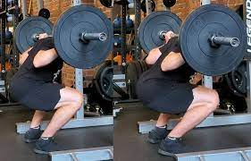

A low bar squat is a squat in which the bar is placed low on the upper back in the back squat position. It should be resting on the posterior deltoid, not the top of the shoulders. The feet are also shoulder-width apart and turned slightly out for this move. In this squat position, to stay balanced and keep a straight bar path over the midfoot, you must immediately bend slightly at the hips. This causes a more forward lean with the torso during the movement to prevent falling backward.
